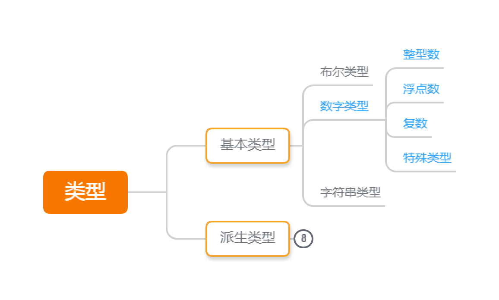

上一篇《Go 语言实战（1）： 初识》开了头，今天我们接着打卡。
注意，文中出现的大多数代码都只是关键片段，如果想尝试运行，需要补充程序的必要成分。关于一个完整 Go 程序的结构，请看第一期的内容。
Go 的定位
接着上一期，这期还是先介绍一些概念性的话题。
如果用一句话来描述，Go 的定位就是 保留 C 语言的简洁性和执行效率的前提下，重新设计放下历史包袱，增加现代特性，表达力和易用性向 Python 等现代语言靠拢 服务于软件工程的语言设计。（划掉的是我啰嗦又辞不达意的总结，加粗的是 Rob Pike 2012 年一个演讲的主题。）
我在写这一段时，发现无论如何都很难概括好。然后我就放弃了自己概括，改为学习大佬讲话了。我还把这个演讲翻译了分享给大家：
我个人看这篇文章的感受是受益匪浅。Rob 在 8 年前 Go 1 时提到的内容，8 年后仍然有效。8 年里 Go 的语言设计只是在保持兼容的基础上做了微调，更多的投入，是在运行时和工具链的改进上。他们从一开始就知道要做什么，怎么到达。作为对比，很多语言流行后的主要用途跟当年创造的目的大相径庭：一开始的目标没有达成，却意外收获了一个新阵地，然后被新的状况推着前进。
而这几个从 贝尔实验室 干到 Google ，参与过创造 Unix、Plan 9、UTF-8 再到 Go 的老大爷（Ken 今年 77 岁，Rob 也 64 岁了），四五十年的开发生涯，清楚地知道在工程实践中，什么是重要的。
语法与风格
Go 的语法大致是类似 C 语言的，有 C 族语言经验的话，很容易习惯，没有也不难学。这里只是提几个比较特别的点。这些语言风格和惯例的内容，一开始就要接触到，又很难归入哪个话题，先留个印象，后续如果涉及到会再次说明。
命名在前的声明
这可能是最显眼的差别。Go 里面所有的声明，都是统一的 关键字 命名 定义内容 这样的顺序。Rob 称这样的语法为『类型语法（type syntax）』，而是 C 的语法是『表达式语法（expression syntax）』。
Go 的例子：
|
|
|
|
阅读代码时，经历一个『是什么——什么名字——具体内容』理解的过程，还是很自然的。关键是，不同的声明都很统一，不需要切换思维模式。用 Rob 的话说，无论对人对计算机来说，都好解析。
C 的表达式语法，大部分情况下不过不失，但是考虑上数组和指针，情况就变得脑筋急转弯起来：
（如果你没有接触过 C 族语言，以下对比可以先跳过）
|
|
C 是很多人接触计算机的第一门语言，不知道你初学时是否有过跟我类似的困惑：
array[10] 的类型是 int ，这我知道了，数组在哪？是 array[10] 还是 array ？
同样 *iPtr 的类型也是 int ，但 *iPtr 是什么东西？指针在哪里？
表达式语法试图通过告诉我们『变量引用时指向什么』，来让我们知道『这是个什么变量』；下标引用得到 int ，就是 int 数组，这有点跳跃；声明的数字是大小而不是下标，容易产生 array[10] 是 int 那 0 到 9 呢的疑惑；最主要的问题，还是 array[10] 视觉上连在一起，需要特意去识别，这在复杂的函数指针上就更严重了。这是个历史遗留问题，这么多年我们早已习惯，但不代表这就不糟糕。
相比之下，var array [10]int 和 var iPtr *int 就直接多了，起码变量名一眼可见，没有粘连；类型也很好理解，[10]int 10 个 int 的数组，*int 指向 int 的指针。
好比向别人介绍一款他没见过的食物，正常情况应该是『它的名字叫饺子（array），馅料是猪肉末（[10]int）』；没有人会上来就『饺子馅（array[10]）是猪肉末（int）』，对方会疑惑，这个食物叫 饺子馅？
首字母大小写控制可见性
Go 没有常见的 public 和 private 关键字，而是 靠名称首字母的大小写来控制可见性。因为代码组织的单位是包（package），包内都是可见的，区别在于是否能被包外面访问。
首字母大写的名称像 Name 称为导出（exported）标识符，包外可以访问，相当于 public；除此以外的情况，像 name 或者 _name 对包外都不可见，相当于 private。这条规则对所有标识符，包括常量、变量、类型、函数、方法、字段 …… 统统有效。你只要看一眼名字，就能知道是否可以被包外访问，不需要再查看声明。
唯一的例外是内置类型，像 int 、float64 、string 、 map 都是未导出标识符，但却可以全局访问，甚至连导入（import）都不用。
Go 支持下划线命名（又叫蛇形命名 snake case，像 snake_case），但不推荐。按惯例除模块名和包名以外，推荐所有标识符都是用驼峰式命名（camel case，像 CamelCase 或者 camelCase），包括常量。
格式化工具 gofmt
大多数 IDE 会在保存时自动执行。如果你习惯使用记事本，手动执行一下也不难。gofmt 会把合法的 Go 代码格式化为统一的规范。它多管闲事到，缩进是 Tab 而不是空格，左花括号 { 不用换行，哪些地方有空格哪些没有，代码块之间要不要空行空多少行 …… 都管。
不要以为只是自带了一个工具这么简单。因为自带了，所以大家都有，不用额外安装第三方和产生不同的规范（即使有第三方，也是考虑兼容官方规范之后再增强）；因为有官方规范，所以大家不用争论那种风格好；提交时不会产生因为格式不同产生的差异和冲突 …… 等等。
请务必把这个功能用上。要么打开 IDE 的自动格式化，要么记得手动执行一下。
省略
Go 总是以清晰明确为第一目标，让人易读无歧义，让机器好解析编译快。所以 Go 不一味追求表达力强，甚至有点逆潮流地刻意区分一些语句和表达式，以避免某些单行长表达式的写法。
既然反正都是要换行的，分号就给省掉了。
而上面提到的声明格式，其实有省略的余地。
第一个是类型推断：
|
|
第二个是集中声明：
|
|
集中声明除了节省敲几个关键字的时间，更重要的是让同类声明放在一起，更有条理。
常量 与 变量
啰嗦一番之后，这里正式进入本期的主题。内容较多，如果通读有压力，可以跳着看留个印象，遇到问题回来翻阅。
在下一期的数据类型之前，先讲常量 和 变量。我们从 值（value）说起。
计算机科学中，值是指『无法进一步求值的表达式（expression）』。像 1 + 3 这个式子，可以进一步求值得到 4，但是 4 已经无法进一步简化，那么 4 就是一个值，是 1 + 3 这个表达式（还有 2 + 2 、 5 - 1 …… 还有 4 本身）的值。简单一点理解，可以认为本质上就是一个 数。
当需要用到一个值，就需要表示、储存和引用它，涉及到三种量（quantity）：字面量、常量、变量。
1. 常量
广义上的常量包括 字面量。
字面量又被称作 无名常量（unnamed constant）或 字面常量 （literal constant）。与之对应，一般所说的常量因为关联了标识符，又被称作 有名常量（named constant）。
字面量 和 常量 在很多语言里，底层实现都类似甚至一致，都是 编译期确定、储存在静态只读数据区、值不能修改，而且很多使用场景，两者都能互相替代。
但是，多数语言（包括 Go）只支持基本类型的（有名）常量，所以严格来说，字面量 和 常量 不能等同。派生类型想表示一个固定的值，只能使用字面量，或者用变量的同时对修改加以限制。
1.1 字面量
字面量（literal）是源码中对一个固定值的表示。换言之，它的值，如字面所示。
几乎所有类型都有对应的字面量表示方法。基本类型的字面量举例：
- 整型数（int）：
1，2，100，1000，0b101（二进制 5），0xff（十六进制 255）； - 浮点数（float）：
1.0，1.1，1e4（科学记数法 10000）； - 字符（byte）：
'a'，'B'； - 字符串（string）：
"字符串被双引号包围"，还有一种反引号（Esc键下方的键）包裹的字符串； - ……
需要注意的是，bool 没有字面量，在其它语言被定义为字面量的 true 和 false ， 在 Go 是内置的 bool 型的（有名）常量。
对于派生类型，字面量的表示是在类型后面加花括号 {} ，并在花括号内指定成员的值（如有），未指定的成员则为零值。例如 a := [4]int{7} 得到这样一个数组 {7, 0, 0, 0} 。具体到介绍具体类型时讨论。
在实际使用上，那些可以在编译期确定的值，像编译期求值的 表达式 和 内置函数返回值，也可以近似看作字面量（无名常量），因为编译器会求值并用得到的值替换它们。
1.2 常量
常量（constant，关键字 const）则是编译期就确定的，在程序运行中不能被修改的有名值。
因为需要在编译期就确定值，常量必须在声明时就指定它的值，而且只能是 引用 字面量 或其它 常量 的表达式 或 内置函数的返回值 ；编译器会对表达式或内置函数求值，原来的表达式或函数不再保留：
|
|
如上所述，常量可以看作给字面量绑定了一个名称，后续用名称引用。
实际上，在程序里使用 Pi （声明为 const Pi = 3.14）和直接使用字面量 3.14 的效果是完全一样的。两种做法 在 Go 里，甚至连生成的汇编代码都几乎一样，常量名实际上只在代码里起作用，编译后都是替换成直接访问存放在 SRODATA （即 static read-only data，静态只读数据）区的值。
既然效果一样，为什么需要常量呢？一般基于以下两个理由：
通过命名提高可读性：命名可以描述一个值的用途，提供值以外的信息，提高代码的可读性。
试想在一个程序里，既需要用到 π 的近似值 3.14，然后刚好另外有一个常数也是 3.14 （例如，计算材料时，某种标准石膏柱的体积是 3.14 立方米）。那么如果都直接使用字面量
3.14，编码中就需要额外的精力去区分3.14究竟是指哪一个。而如果改用标识符Pi和Volume，就非常明确了。这种光看字面量无法识别含义的值，称为魔数（Magic Number），是开发中需要避免的。
命名还能提高代码的可维护性：命名常量只需要修改声明处的值，就能改变所有引用的值。
还是 3.14 的例子。如果后面石膏柱的体积改变了，变为 10。那么我们就要把所有含义为石膏柱体积的
3.14改为10；与此同时，π 的值当然没有变，含义为 π 的3.14必须保持不变。又或者 π 的值需要提高精度到3.141593，保持另一个常数不变。 当这两个值在代码中被大量引用时，即使有搜索功能的辅助，要正确地把值改过来，既不遗漏也不错改，也是一件吃力不讨好的差事。如果使用了常量，就只需要修改常量声明处的值即可。
反过来说，如果一个字面量满足以下至少一点，就应该考虑定义为常量：
- 不能光从字面量和使用上下文看出含义（即魔数）；
- 相同含义的字面量在代码中多处反复出现。
再次提醒注意的是，在 Go 里面常量（的底层实现）只能为 基本类型 （即 布尔型、数字类型、字符串类型 3 类，后面会讲到）， 不可以是各种派生类型。
1.2.1 自动补全
对于集中声明的常量，编译器允许省略标识符以外的内容，省略的部分自动补全为上一行的内容。注意，要自动补全， 常量 和 集中声明 （共用一个 const 关键字）这两个条件缺一不可。
|
|
等价于
|
|
错误示范：
|
|
1.2.2 常量计数器 iota
除此之外，Go 还预定义了一个特殊的标识符 iota （iota 是第九个希腊字母的发音），来方便定义常量。
iota 的值的变化规律是：遇到 const 就归零，每遇到一行常量声明（无论是否引用 iota）就加一。或者换句话说，iota 是 const 声明块的声明行行号（从 0 开始）。看例子：
|
|
结合 自动补全，能够大大简化一些有规律的常量声明：
|
|
这样声明还有一个好处：有些常量对具体的值没有要求，但是要求一组常量之间总是保持一个先后关系；用 iota 声明，就不需要一个一个手动输入后续的值；而当需要加入新的常量时，直接插入中间，后续的值会自动后延。
2. 变量
因为常量要在编译期确定，而且后续无法修改，所以无法保存在运行时运算得到的值，也无法在运行过程中对值进行修改。这时就需要用到变量了。
变量（variable，关键字 var），本质上是 一个关联了标识符（命名）的储存地址，用来保存 允许运行时确定或者改变的值。稍复杂一点的程序，都很难不使用中间结果直接运算出最终结果，变量允许我们 储存、引用、修改 中间结果，把复杂的运算层层分解成简单运算，再把中间结果拼接成最终结果。所以变量是实际编程最常打交道的。
|
|
其中 Go 的局部变量还有两个常量和全局变量没有的特点：
- 可以使用短声明；
- 声明了必须使用。
2.1 短声明
前面在语法与风格部分有提到，可以省略常量和变量声明中的类型，让编译器根据赋值的字面量推断类型。
而局部变量还能更进一步，把 var 关键字也省略掉，改用短声明赋值符号 := （就是冒号后面紧接等号），表示声明同时赋值的语义：
|
|
但是严格来说，短声明跟 var + 类型推断还是有区别：
|
|
var 关键字后面跟着的，都必须是新声明的变量；而短声明则意味着『至少声明了一个新变量』，不需要都是新变量。这种特性加上局部变量遮盖（shadow），容易产生一些非常难以察觉的错误，所以短声明要谨慎使用：
- 引用范围很广，引用位置距离声明比较远的变量，不要用短声明；
- 除非是用完即弃的临时变量，不要用短声明同时声明 / 赋值 多个变量。
2.2 局部变量未使用错误
Go 不允许局部变量定义了却不使用。这是一个编译错误，不是警告。常量 和 全局（包级）变量 无此限制，只有局部变量有。
|
|
3. 作用域（scope） 与 遮盖（shadow）
无论 常量 还是 变量，都不允许重复声明：
|
|
但是以下代码却是合法的：
|
|
这是因为常量 / 变量有作用域。第二个例子里面，后声明的 a, b, c 实际上是 不同作用域下的新常量 / 变量，所以不会产生『重复声明』的错误，它们可以同时存在。
而在引用的时候，会从引用位置的作用域开始往外查找，引用最近作用域的值。一旦更内层的作用域声明了新的 常量 / 变量，外部的值就无法引用到，这种情况称为 遮盖（shadow，又译作 遮挡、隐藏）。
多数语言都是这样的设计。但是在 Go 里，遮盖 跟 变量短声明 放在一起，很容易产生不起眼的错误。先看正常的代码：
|
|
然后很自然地，随着其他代码的加入， main 函数改成了这样（tryPerform 函数不变）：
|
|
关键是，这个错误编译器无法检查出来，因为 := 有歧义，在声明多个变量时，同时混合了 赋值 和 声明 的语义。在第一份代码中，result 已经存在，同时新变量 success 满足了短声明至少声明一个新变量的要求，所以短声明『很聪明』地理解了 result 只是要赋值。当因为某些修改，创建新的作用域时，在这个作用域内 result 还没被声明（尽管可以访问到外层的 result），短声明又『很聪明』地声明了新的 result 。
这导致超出预期的行为。
解决办法也很简单：大跨度（特别是跨作用域）使用的变量，不要用短声明，老老实实用 var 关键字。var 很明确地告诉我们，是新声明的变量，没有 var 则只是赋值。视觉上，var 关键字比等号前的冒号好辨认；语义上不存在歧义，编译器很容易发现错误。
需要特别提醒一下的是，在代码块开头声明的变量，作用域也限于代码块内，哪怕声明位置在花括号 {} 以外：
|
|
如果变量在代码块之后还需要引用，就应该在代码块之外事先声明：
|
|
4. 类型、推断与转换
Go 是静态强类型（static strongly typed）语言。换句话说，Go 的类型是编译期确定的（静态），而且需要显式的类型转换（强类型）。在这个基础上，Go 又引入了类型推断（隐式类型 implicity typed，但类型仍然是在编译期可以推导得到，运行时不允许修改，仍然是静态强类型），加上 常量 和 变量 的处理不一样，显得好像有点复杂。下面梳理一下。
字面量、常量 和 变量 放在这里一起讲，做个对比。
Go 有两种意义上类型 ：
一个是显式的类型
type。它可以在声明时指定，也可以在赋值时推断出来。在绝大多数语境下，当我们提到『类型 type』这个术语，说的就是这个类型。没有指定类型称为无类型
untyped。一个是编译器根据 字面量 或 表达式的值 推断得到的 常量专用类型
Ctype（constant type 的缩略）。编译器源码里的注释是：
Ctype describes the constant kind of an “ideal” (untyped) constant.
翻译过来就是：Ctype 描述了一个理想情况下的（无类型）常量的常量种类。
换言之，
Ctype是untyped常量（包括字面量）特有的，是作为没有显式type时的补充的隐式类型。一个值允许在逻辑上没有类型，也就是无类型untyped；但这个值又有储存、运算 的需要，所以编译器就给它推断一个Ctype（和对应的默认type）。
一个常量，如果显式指定了 type，就没有 Ctype 的事；如果没有指定，则根据绑定的值确定，究竟是有类型 type 还是无类型 untyped Ctype。
对于绝大多数类型，这两者差别不大，只是 untyped 逻辑上没有类型，允许自动转换（当然还需要满足转换规则，除数字类型以外的类型，都必须底层类型一致才能转换），一般的使用没有差别：
|
|
a 和 b（以及 aa、bb），c 和 d， 在语义上有差别，但不涉及类型转换的话，使用上完全没差别。
因为不同的数字类型之间允许转换，type 和 Ctype 的差异 主要体现在数字类型上。
因为还没讲到，先稍微列一下数字类型：

其中特殊类型里，byte 是 一个字节的 ASCII 字符（uint8 的别名）， rune 是四个字节的 Unicode 字符（int32 的别名），可以归为字符类型；uintptr 实际上也是一个整型，只是这个数字表示一个内存地址。
| 大类 | type | Ctype（默认 type / 储存宽度） |
|---|---|---|
| 整型 | uint8, int8, uint16, int16, uint32, int32, uint64, int64, uint, int, uintptr | int （int） |
| 浮点数 | float32, float64 | float（float64） |
| 复数 | complex32, complex64 | complex（complex64） |
| 字符 | byte, rune | rune（rune，即 int32） |
整型看起来很多类型，其实只是 有没有符号 和 位宽 的差别，下一期讲基本类型会讲。
4.1 字面量
字面量无法指定 type ，只有 Ctype 。
数字类型可以分为四个大类（kind），每个大类下面根据表示范围又可以分为很多个类型（type）。每个大类对应一个 Ctype ，同时对应一种默认的 type 。字面量会根据表示形式，自动推断为对应的 Ctype ，并以默认类型储存。
整型数
整型数字面量会被推断为 untyped int ，默认类型为 int （int 的位宽与架构相关，64 位系统为 64 位，32 位系统为 32 位）。
以下字面量都被认为是整型数（二进制和八进制从 1.13 开始支持）：
- 十进制整数（即没有小数部分），如
159。 - 二进制整数，为了区分以
0b或0B开头（大写有效，但gofmt会自动格式化为小写，下同），如0b10011111（即十进制 159）。 - 八进制整数，以
0、0o或0O开头，如0o237（即十进制 159）。 - 十六进制整数，以
0x或0X开头，如0x9f（即十进制 159）。
浮点数
浮点数字面量会被推断为 untyped float ，默认类型则为 float64 。
浮点数的字面量形式有：
普通十进制小数，如
15.9；整数和小数部分都可以为零，1.0和0.0虽然 和1和0值是一样的，但是推断类型不同。整数或者小数部分如果为零，可以省略，但不能同时省略（毕竟不能只剩下一个小数点），如
.9等同于0.9，1.等同于1.0。科学记数法：十进制整数或符合前面两条的浮点数 +
e/E+ 十进制整数的指数，如1.59e2表示 $ 1.59 \times 10^2 $ 也就是 159，314E-2表示 $ 314 \times 10^{-2} $ ，即 3.14 。从 1.13 开始，支持十六进制的科学记数法：十六进制的整数或小数 +
p/P+ 十进制整数作为指数，如15.9p7表示 $ (1 \times 16^1 + 5 \times 16^0 + 9 \times 16^{-1} ) \times 2^7 $ （即十进制的 2760）；p后的指数是以 2 为底的，注意指数即使为 0 也不能省略。这种表示法用于二进制（十六进制）小数比十进制清晰简单，像
0x.01p0，对应十进制的 0.00390625；一般很少用到，了解一下即可，不展开。
复数
复数字面量会被推断为 untyped complex ，默认类型为 complex128 。
复数由实部和虚部组成。实部和虚部分别都是一个整型数或者浮点数，只是虚部后面跟着一个 i；实部和虚部允许用不同的进制分别表示，具体规则参考整型数和浮点数部分。只是为了兼容 1.13 以前的旧代码，虚部的八进制必须以 0o 或 0O 开头， 0 开头会被当做十进制的前导零。
例如 159 + 7i ，实部 159，虚部 7；0111 + 010i 实部为 73（八进制），虚部为 10；等等。实部如果为零，可以省略；但虚部不可以省略：0i 会被认为是复数，0 和 0.0 则分别被认为是 整型数 和 浮点数——尽管它们都是零值，值是相等的。
从数学上讲，浮点数（小数）是复数的特例（虚部为 0）；整型数则是浮点数的特例（小数部分为 0）。但是从计算机更有效储存和运算的角度，需要把它们区分开来，一直为 0 的部分，就不必开辟储存空间。
从 1.13 开始，允许在数字中间加下划线 _ 作为分段符来提升字面量的可读性。按英文惯例每三位加一个分段符，那么 十万八千 就写作 108_000 ；对于十六进制数，一般每两位（一个字节）作为一个分段，如 0x_15_ef。当然这只是惯例，也可以根据需要分段。分段符每次只能加一个，只能加在数字之间或者进制前导符和数字之间。这个实际试一下就知道了。
字符
字符字面量会被推断为 untyped rune ，默认类型为 rune。
两种字符类型只是两种整型数的别名。
字符及字符串相关部分会涉及到字符编码的知识，篇幅关系，不一一展开。初学者如果觉得难以理解，可以先跳过，先使用普通字符字面量。
byte 对应 uint8 ，储存的是 1 字节长度的 Unicode 码（相当于 Unicode 开头 ASCII 码加上 Latin-1 辅助字符部分）；
rune 对应 int32 ，储存的是一个 4 字节长度的 Unicode 码。
字符型的字面量均以单引号 ' 包裹，形式有：
普通字符，如
'a'（十进制码值 97），'汉'（十进制码值 27721，十六进制 0x6c49）。码值转义，又分四种情况：
\后接 3 位八进制数，前导零不能省略，如'\141'对应十进制码值为 97，即'a'；'\041'对应十进制码值 33，即'!'，不能写作'\41'；3 位八进制数最大能表示十进制的 511，但由于这种表示法用来表示 1 字节的 Unicode，大于 377 （即十进制 255）的值均无效。\x后接 2 位十六进制数，前导零不能省略，表示 1 字节长度的 Unicode，'a'表示为'\x61'。\u后接 4 位十六进制数，前导零不能省略，表示 2 字节长度的 Unicode （或者说高 2 位为 0 的 4 字节 Unicode），'a'表示为'\u0061'；这个范围已经可以表示大部分的常用汉字了（严格说是『中日韩统一表意文字』的 初期统一汉字 + 扩展 A 区），如'汉'表示为'\u6C49'。\U（大写 U）后接 8 位十六进制数，前导零不能省略，表示完整 4 字节的 Unicode ，这个范围已经可以表示绝大多数的 Unicode 字符了（Unicode 标准仍在扩展中），'a'表示为'\U00000061'，'汉'表示为'\U00006C49'。
如果
\后面接的字符不是 数字、x、u或U，则被当做转义字符。转义字符实际上是常用的不可见字符的表示方式，避免记忆 Unicode 码值，常见的转义有：'\b'退格符（backspace），对应'\x08'，作用是光标往左一个字符，有些情况下意味着删除一个字符；'\n'换行符（newline），对应'\x0A'，作用是光标往下一行；'\r'回车符（carriage return），对应'\x0D'，作用是光标回到行首；……
比较特殊的是
'\\'和'\''，就表示\和'，并非不可见字符；但由于单个符号有特殊含义，必须转义才能原义输出。
以上内容总结起来就是：数字类型的字面量，根据具体形式，会被推断为 4 种 Ctype ，并按范围最大的类型作为默认类型储存（整型除外，int 不能包含整型的最大范围）。
值溢出（overflow）
超出默认类型范围的值，会引起溢出错误，无法储存和使用。整型比较特殊，默认底层类型是 int ：在 64 位系统为 64 位有符号数，1 << 63 到 1 << 64 -1 之间的数可以以 uint64 储存；在 32 位系统为 32 位有符号数，uint32 、int64 、uint64 都有超出 int 的范围；当然如果连 int64 （负数最大范围）和 uint64 （正数最大范围）都超了，还是只能溢出。
网上有教程说，字面量（和常量）不限范围，这种说法是错的。他们的依据是以下的代码可以正常编译运行：
|
|
在这个例子里，如果看了生成的汇编代码就会发现，a 和 1 << 64 - 1 都不见了。因为编译器很聪明地发现，a 没有被引用到，在编译时就把它们优化删除掉了，所以没有报错。
还有这个例子也可以正常运行：
|
|
看了汇编结果就会知道，编译器实际上把上面的代码里的 a 优化掉了，b 绑定的值变成了 4611686018427387904 （1 << 62）。
换言之，溢出的字面量只能存在于代码里，而且溢出值不能超出显式类型范围，不能被直接引用 。如果这个溢出的值，经过编译器求值之后发现，是一个可以优化的中间值，实际上没有被引用，编译器就不会报错；反之，如果有溢出值被引用到了，或者虽然没有直接引用溢出值，但超出了显式类型的范围，就会报 overflow：
|
|
关于转换，在下面会提到。
4.2 常量
（有名）常量则有可能有 type ，也可能无类型只有 Ctype 。
常量在声明时：
- 没有指定
type，常量的类型跟绑定的值一致，前面用bool和untyped bool、string和untyped string举过例子； - 指定了
type，如果跟绑定的右值类型不一致，就涉及到转换；如果无法转换，就报错。
常量被引用时，类型与所需类型不一致，就需要转换，这时要看常量的类型。
无类型（untyped）
Go 是强类型语言，必须显式转换类型，但这仅限于类型确定 typed 的情况，untyped 会隐式转换。常量的转换跟变量不同，要求值要相等。只要一个 untyped 值可以以另一种类型表示，编译器会做自动的隐式转换；但转换过程中不允许有任何溢出（和因此导致的截取（truncated））；而浮点数除了溢出，还有精度丢失，浮点数之间的转换中允许精度丢失。
溢出和精度丢失的差别，用一个简化的十进制字符串的例子来说明：
假定我们用一个长度为 8 的字符串储存一个小数，符号和小数点不能省略，那么可以表示的最大和最小的数分别是 “+999999.” 和 “-999999.” ，比前者大就是上溢出，比后者小就是下溢出。与此同时，最小精度（非零绝对值最小）是 “+.000001” ，比这更小的值无法表示。1000000（6 个 0）要转换为 “+000000.” 保存是溢出后截取低位，0.1234567 转换为 “+.123456” 保存则是精度丢失。
浮点数的二进制指数表示比这个复杂，还涉及到编码和进制转换，但溢出和精度丢失的原理是一致的。一句话总结就是，精度范围内超出是溢出，精度范围以外超出是精度丢失。
|
|
从十进制角度看，浮点数在某一位左边就是溢出，右边就是精度丢失，会非常费解。因为实际上这些数是以二进制保存的，从二进制的角度看就会顺理成章。这里不展开，有兴趣的朋友可以自己去看 IEEE-754 的标准。
一般程序不容易超出这些范围，但还是需要知道范围的存在。math 包有一系列常量给出了不同数字类型的最小值（MinXXX）、最大值（MaxXXX）和浮点数的最小小数（SmallestXXX）。如果涉及大数运算和对精度有特殊需求，则需要用到 math/big 包。
理解 整型数 和 浮点数 的转换之后，复数 和 字符 也很好理解。
复数的实部和虚部分别是一个浮点数，复数之间的转换可以直接参考浮点数。虚部为 0 的复数可以向浮点数自动转换，实部如果没有小数部分还能向整型转换；但是虚部不为 0 不能被截断（truncated）：
|
|
字符则本质上就是整型，只是字面量形式不同：
|
|
确定类型（typed）
自动转换限于 untyped ，如果一个常量已经指定了类型，那么哪怕值满足了转换条件，也必须显式转换；而且在显式转换中，值仍然要保持相等（显式转换是 T(src) ，T 是目标类型，src 是来源值）：
|
|
4.3 变量
变量一定有显式的类型 type ，不存在 untyped 的变量。
变量声明时，类型可以指定，也可以推断；如果声明时没有指定 type ，则类型跟赋值的右值一致；如果右值是 untyped 常量，则类型是对应的默认类型（而不是 Ctype ，数字类型的默认类型分别是 int ，float64，complex128，rune）。
跟常量类似，变量被引用时也会出现与需要的类型不一致，需要转换类型：
由于变量一定有确定类型 （
typed），只能是显式转换。非常量（包括变量）的转换允许溢出也允许精度丢失：
- 整型（包括字符型）在高位宽向低位宽类型转换时如果溢出，直接丢弃高位保留低位，如 256（二进制 100000000，8 个 0）向
int8转换时，保留低 7 位（去掉一位符号位，int8数字位只有 7 位），得到 0 。 - 浮点数转整型，直接丢弃小数部分（绝对值变小）；如果得到的整型还是溢出，参考上一条继续转换；如 257.1 向
int8转换，得到 1。 - 整数或浮点数转浮点数，允许发生精度丢失，如
1<<64 - 1（18446744073709551615，最大的uint64）转float32得到1.8446744e+19，73709551615 丢失。 - 非常量的复数不允许直接转换成其他数值类型，只能通过内置函数
real()和imag()提取实部和虚部；复数之间转换，实部和虚部分别是一个浮点数，跟浮点数之间的转换一致，也允许精度丢失。 - 除整型以外的转换，如果来源值溢出目标范围，结果不确定，依赖于具体的编译器实现；目前我测试的版本（1.15）是会产生无穷值（浮点数是
+Inf和-Inf，复数则是具体实部或虚部是无穷）。
- 整型（包括字符型）在高位宽向低位宽类型转换时如果溢出，直接丢弃高位保留低位，如 256（二进制 100000000，8 个 0）向
4.4 其它情况
注意到我在提到变量的转换时，提到了『非-常量』（注意断句），而不是直接说变量。
难道还存在常量和变量以外的量？是的。
首先是前面提到的，可以在编译期求值的 表达式 和 内置函数的返回值，实际使用上跟字面量一致，差别是 字面量一定是 untyped 的，而这种值视乎具体情况，有可能是有类型的。不过 转换规则仍然跟常量一致，差别仅仅是没有标识符，算广义的常量：
仅引用了字面量 / 常量的 内置函数返回值，如
len("1234")，字符串"1234"是字面量，len()是内置函数，字符串的长度在编译期就可以算出来是 4，这个值在编译的时候就会替换掉函数；但类型受函数返回值影响为int，跟4这个整型字面量的untyped int仍然有差别（有了确定类型就不能自动转换）。相对地，如果
a不是常量，那么len(a)就不能在编译期求值了；内置函数则是指不需要导入就可以调用的函数，math.Abs()这样还要导入的函数不算（尽管是官方库）。仅引用了字面量 / 常量的 表达式的值，如
1 + 2 + 3就不必说了，len("1234") + 1.1也是。类型方面，如果表达式引用了多种类型，则会往一个统一类型转换，然后以该类型运算。范围窄的向范围广的类型转，
untyped往typed转；如果有多个不同的type，则需要显式转换。如果无法统一类型，就会报错。如1 + 2的类型是untyped int；1 + 2.0是untyped float；len("1") + 1.0是int；而len("1") + 1.1会报错，因为确定类型int无法自动转换，而1.1自动转换成int会造成截取，丢弃小数。
然后跟第一种情况相反，表达式或函数里出现了 非常量或者非内置函数，就无法编译期求值。它既不是常量，又没有像变量给一个内存空间，实际运行中可能会在编译器生成的临时变量或者寄存器上保存和运算。这就是前面提到的 『非-常量』。
不过这里只是提一下它们的存在，转换方式其实没有超出上述的情况的组合：
看类型，如果是
typed就必须显式转换；untyped则可以自动转换；看是否常量（广义的，包括字面量），是常量就必须值相等不允许值的截取；常量以外则允许值按一定规则截取。
这样一组合，一共就四种情况而已，上面提到的那么多种情况都包括在内。
需要注意的是，当赋值时涉及转换，转换规则按 来源值 决定，如：
|
|
就属于 untyped float 常量 转换为 int ：untyped 允许自动转换，但是常量决定了不能截断小数，会报错。
关于类型转换
到这里，想再提一下强类型的显式转换。
可以看到， untyped 的值允许自动转换。字面上的理解，就是『无类型』（尽管底层实现需要保存需要运算，带着一个默认类型）没有类型限制，值可表达为对应类型，就可以自动转换。
那么相对地，有类型 typed 的值需要显式转换（程序员主动表达意图），就是一种设计上的有意为之，让类型系统承担了一部分的逻辑表达功能。
因为还没讲到，解释一下自定义类型： type NewInt int 定义了一个自定义类型 NewInt，它的底层类型是 int ，会具有 int 的内置行为，并且能增加自定义行为（方法）。但是 Go 会认为它们是完全不同的两个类型，直接运算会报错，必须显式转换；当然，两个底层类型同为 int 的自定义类型之间也是一样。 int 转 int8 虽然都是整型，毕竟位宽不同范围不同，需要显式转换还可以理解为担心值溢出；那么 int 和 NewInt 之间的转换，就是纯粹出于行为和逻辑上的考虑。
举个例子，地板、砧板 两种自定义类型，底层实现都是木板。为了简化讨论，我们姑且认为是一样的木板，并没有额外的特殊加工。即使是这样，在使用中，两者还是不能搞混。如果在弱类型环境中，不去检查木板的类型，只要能用就给你用，可能出现：『这砧板怎么有个鞋印』『这地板怎么有肉沫菜叶』这样的问题。
自动转换的假设是，程序员清楚知道自己要做什么，编译器不应该干预增加工作量；显式转换的假设是，程序员有可能出错，编译器要帮忙检查类型的不匹配，这里面可能隐藏着逻辑错误。
在需要快速写个脚本、刷个算法题的时候，强类型语言像自带啰嗦严谨的老管家，一旦做了不确定的事都要确认一下，写得很不爽。但如果是维护一个大型项目，在里面人工排查类型误用引起的错误，工作量可比增加一点确认大多了，最后往往还是得引入类型检查工具——等于最后还是去雇了一个管家，那为什么不一开始就让管家参与呢？老管家并不会真的干预你做事，只是需要你额外的确认；如果特殊情况，你明确表示要用地板切菜（显式转换），他也不会拦你。
练习
大家不要被上面的篇幅吓到，感觉光 常量 和 变量 都这么复杂。这是把 原理、边界情况 和 容易犯的错误 都给罗列出来。有些内容一般使用很难涉及，留个印象日后碰到知道往哪个方向排查；有些内容看着复杂，实际操作一遍其实很直观——IDE 都会有提示，并不需要人肉 check，这里只是让你知道为什么会报错。另外，还有部分内容涉及到类型系统的知识，需要结合下一篇类型的介绍一起理解。
下面给出一系列的 常量 和 变量声明，大家可以试着判断一下，哪些会报错、为什么；合法的声明具体是什么类型，值是多少。有自信的朋友可以试着人工检查一下，暂时做不到可以把代码补全之后实际运行一下：
|
|
参考资料
- Go语言101 / 《基本类型和它们的字面量表示》 ：https://gfw.go101.org/article/basic-types-and-value-literals.html

本文为本人原创，采用知识共享 “署名-非商业性使用-相同方式共享” 4.0 (CC BY-NC-SA 4.0)”许可协议进行许可。
本作品可自由复制、传播及基于本作品进行演绎创作。如有以上需要，请留言告知，在文章开头明显位置加上署名（Jayce Chant）、原链接及许可协议信息，并明确指出修改（如有），不得用于商业用途。谢谢合作。
请点击查看协议的中文摘要。